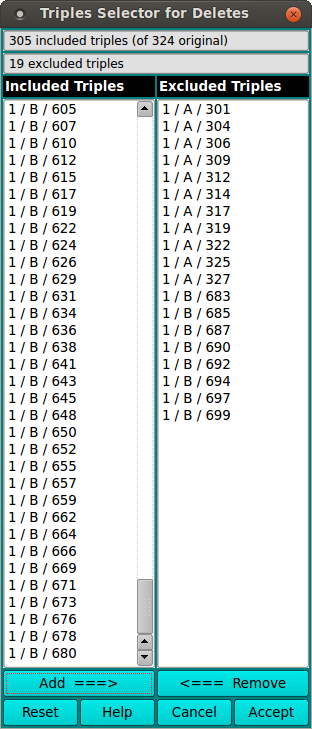

Manual
Manual
Manual
Manual
Using this dialog window, you can select triples to be deleted from the dataset. The final state of included and excluded triples determines what data will be output.
The dialog consists of two list windows. The one on the left initially contains the included dataset triples at invocation. The right-side list is initially empty. Delete selection consists of clicking on one or more left-side-list triples and moving them to the "Excluded" list on the right, via the Add ===> button. You may remove triples from the excluded list by clicking on their entries in the "Excluded" list and moving them back to the "Included" list via the <=== Remove button.
Once the lists of included and excluded triples is as desired, the Accept button closes the dialog and communicates the selected triple deletions to the caller.
